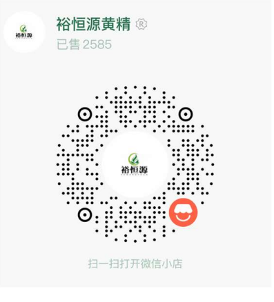

01
礼盒正面
山脉、森林与黄精根茎构成主视觉。
扫码互动 · 智能包装体验
真实企业影像 · 包装数字故事 · AR山林体验
故事起点
清原的山脉、林木与植物意象，成为包装故事的底色。黄精根茎作为视觉主角，与层叠山影一起被重新组织成版画语言。
不是把风景装进盒子，而是把山林的气息，带进一份相聚与分享。
包装平面系统 · 02
外盒、手提袋、故事卡与六款独立小袋共享同一套山林图形语言。展开细节图，看看包装如何从一张主画面延伸成完整礼赠系统。
山脉、森林与黄精根茎构成主视觉。
黄精根茎组、山林组、植物组，共同组成系列视觉。
成品应用展示 · 03
从开盒仪式、产品全家福到家居与节日赠礼场景，让包装从一件作品，成为一份可分享的心意。
版面中的二维码为设计展示图形；包装实际印刷请使用已核验的正式二维码。
企业影像资料 · 05
从山林生长，到一盒黄精果。
五段影像章节，串起黄精生长、林下环境、采挖原料、加工与产品故事。点击章节后播放对应片段，默认静音。
包含画面标注“清原满族自治县”的企业公开视频，并呈现黄精根茎与山林作业场景。
通过企业公开影像，了解黄精原料、加工环节与相关产品画面。
影像素材整理自“裕恒源黄精”官方公开视频，用于本包装设计的数字互动展示。
涉及具体生产批次、工艺参数及产品信息，以企业最终确认内容为准；视频不代表本批次产品溯源。
品牌故事
从一盒山林故事，继续认识裕恒源。
官方购买
微信扫码进入「裕恒源黄精」官方小店
微信环境下可尝试长按识别小店码；也可保存图片后使用微信扫一扫。

实际商品、价格及服务信息以微信小店页面为准。
本页面中的数字互动内容用于品牌与包装故事展示。
清原山序 · 裕恒源黄精果礼盒
山林为脉，黄精为珍。
回到山序起点